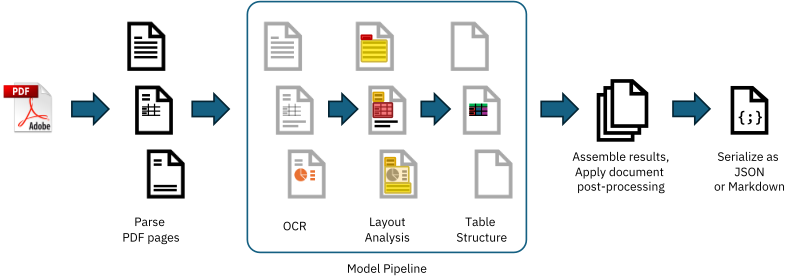
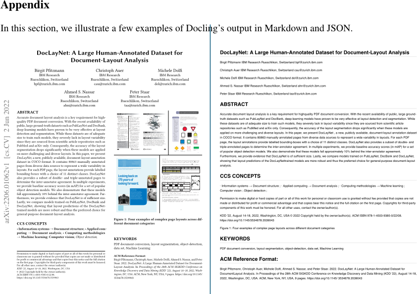
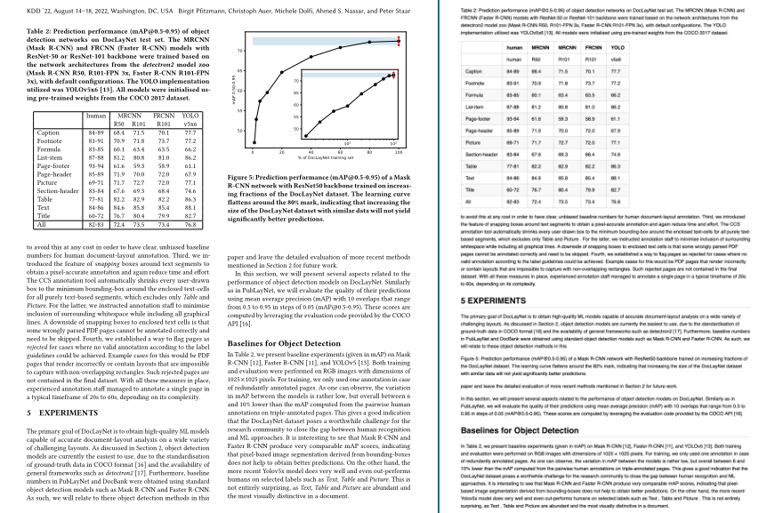
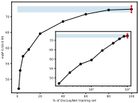
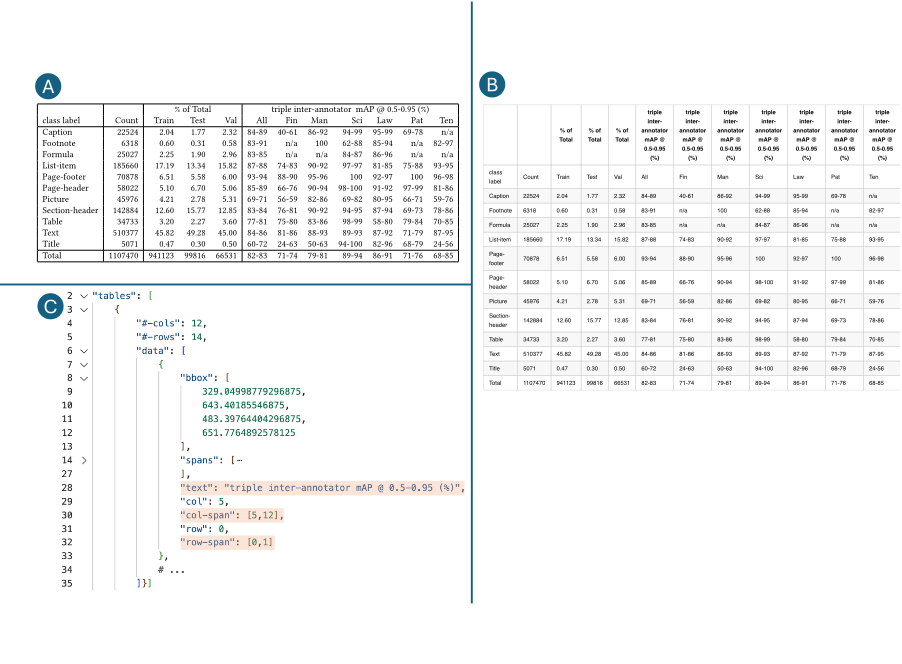

Christoph Auer Maksym Lysak Ahmed Nassar Michele Dolfi Nikolaos Livathinos Panos Vagenas Cesar Berrospi Ramis Matteo Omenetti Fabian Lindlbauer Kasper Dinkla Lokesh Mishra Yusik Kim Shubham Gupta Rafael Teixeira de Lima Valery Weber Lucas Morin Ingmar Meijer Viktor Kuropiatnyk Peter W. J. Staar
AI4K Group, IBM Research R¨ uschlikon, Switzerland
This technical report introduces Docling , an easy to use, self-contained, MITlicensed open-source package for PDF document conversion. It is powered by state-of-the-art specialized AI models for layout analysis (DocLayNet) and table structure recognition (TableFormer), and runs efficiently on commodity hardware in a small resource budget. The code interface allows for easy extensibility and addition of new features and models.
Converting PDF documents back into a machine-processable format has been a major challenge for decades due to their huge variability in formats, weak standardization and printing-optimized characteristic, which discards most structural features and metadata. With the advent of LLMs and popular application patterns such as retrieval-augmented generation (RAG), leveraging the rich content embedded in PDFs has become ever more relevant. In the past decade, several powerful document understanding solutions have emerged on the market, most of which are commercial software, cloud offerings [3] and most recently, multi-modal vision-language models. As of today, only a handful of open-source tools cover PDF conversion, leaving a significant feature and quality gap to proprietary solutions.
With Docling , we open-source a very capable and efficient document conversion tool which builds on the powerful, specialized AI models and datasets for layout analysis and table structure recognition we developed and presented in the recent past [12, 13, 9]. Docling is designed as a simple, self-contained python library with permissive license, running entirely locally on commodity hardware. Its code architecture allows for easy extensibility and addition of new features and models.
Here is what Docling delivers today:
To use Docling, you can simply install the docling package from PyPI. Documentation and examples are available in our GitHub repository at github.com/DS4SD/docling. All required model assets 1 are downloaded to a local huggingface datasets cache on first use, unless you choose to pre-install the model assets in advance.
Docling provides an easy code interface to convert PDF documents from file system, URLs or binary streams, and retrieve the output in either JSON or Markdown format. For convenience, separate methods are offered to convert single documents or batches of documents. A basic usage example is illustrated below. Further examples are available in the Doclign code repository.
from docling. document_converter import DocumentConverter
source = "https :// arxiv.org/pdf /2206.01062" # PDF path or URL
converter = DocumentConverter ()
result = converter. convert_single (source)
print(result. render_as_markdown ()) # output: "## DocLayNet: A Large
Human -Annotated Dataset for Document -Layout Analysis [...]"Optionally, you can configure custom pipeline features and runtime options, such as turning on or off features (e.g. OCR, table structure recognition), enforcing limits on the input document size, and defining the budget of CPU threads. Advanced usage examples and options are documented in the README file. Docling also provides a Dockerfile to demonstrate how to install and run it inside a container.
Docling implements a linear pipeline of operations, which execute sequentially on each given document (see Fig. 1). Each document is first parsed by a PDF backend, which retrieves the programmatic text tokens, consisting of string content and its coordinates on the page, and also renders a bitmap image of each page to support downstream operations. Then, the standard model pipeline applies a sequence of AI models independently on every page in the document to extract features and content, such as layout and table structures. Finally, the results from all pages are aggregated and passed through a post-processing stage, which augments metadata, detects the document language, infers reading-order and eventually assembles a typed document object which can be serialized to JSON or Markdown.
Two basic requirements to process PDF documents in our pipeline are a) to retrieve all text content and their geometric coordinates on each page and b) to render the visual representation of each page as it would appear in a PDF viewer. Both these requirements are encapsulated in Docling's PDF backend interface. While there are several open-source PDF parsing libraries available for python, we faced major obstacles with all of them for different reasons, among which were restrictive licensing (e.g. pymupdf [7]), poor speed or unrecoverable quality issues, such as merged text cells across far-apart text tokens or table columns (pypdfium, PyPDF) [15, 14].

We therefore decided to provide multiple backend choices, and additionally open-source a custombuilt PDF parser, which is based on the low-level qpdf [4] library. It is made available in a separate package named docling-parse and powers the default PDF backend in Docling. As an alternative, we provide a PDF backend relying on pypdfium , which may be a safe backup choice in certain cases, e.g. if issues are seen with particular font encodings.
As part of Docling, we initially release two highly capable AI models to the open-source community, which have been developed and published recently by our team. The first model is a layout analysis model, an accurate object-detector for page elements [13]. The second model is TableFormer [12, 9], a state-of-the-art table structure recognition model. We provide the pre-trained weights (hosted on huggingface) and a separate package for the inference code as docling-ibm-models . Both models are also powering the open-access deepsearch-experience, our cloud-native service for knowledge exploration tasks.
Our layout analysis model is an object-detector which predicts the bounding-boxes and classes of various elements on the image of a given page. Its architecture is derived from RT-DETR [16] and re-trained on DocLayNet [13], our popular human-annotated dataset for document-layout analysis, among other proprietary datasets. For inference, our implementation relies on the onnxruntime [5].
The Docling pipeline feeds page images at 72 dpi resolution, which can be processed on a single CPU with sub-second latency. All predicted bounding-box proposals for document elements are post-processed to remove overlapping proposals based on confidence and size, and then intersected with the text tokens in the PDF to group them into meaningful and complete units such as paragraphs, section titles, list items, captions, figures or tables.
The TableFormer model [12], first published in 2022 and since refined with a custom structure token language [9], is a vision-transformer model for table structure recovery. It can predict the logical row and column structure of a given table based on an input image, and determine which table cells belong to column headers, row headers or the table body. Compared to earlier approaches, TableFormer handles many characteristics of tables, such as partial or no borderlines, empty cells, rows or columns, cell spans and hierarchy both on column-heading or row-heading level, tables with inconsistent indentation or alignment and other complexities. For inference, our implementation relies on PyTorch [2].
The Docling pipeline feeds all table objects detected in the layout analysis to the TableFormer model, by providing an image-crop of the table and the included text cells. TableFormer structure predictions are matched back to the PDF cells in post-processing to avoid expensive re-transcription text in the table image. Typical tables require between 2 and 6 seconds to be processed on a standard CPU, strongly depending on the amount of included table cells.
Docling provides optional support for OCR, for example to cover scanned PDFs or content in bitmaps images embedded on a page. In our initial release, we rely on EasyOCR [1], a popular thirdparty OCR library with support for many languages. Docling, by default, feeds a high-resolution page image (216 dpi) to the OCR engine, to allow capturing small print detail in decent quality. While EasyOCR delivers reasonable transcription quality, we observe that it runs fairly slow on CPU (upwards of 30 seconds per page).
We are actively seeking collaboration from the open-source community to extend Docling with additional OCR backends and speed improvements.
In the final pipeline stage, Docling assembles all prediction results produced on each page into a well-defined datatype that encapsulates a converted document, as defined in the auxiliary package docling-core . The generated document object is passed through a post-processing model which leverages several algorithms to augment features, such as detection of the document language, correcting the reading order, matching figures with captions and labelling metadata such as title, authors and references. The final output can then be serialized to JSON or transformed into a Markdown representation at the users request.
Docling provides a straight-forward interface to extend its capabilities, namely the model pipeline. A model pipeline constitutes the central part in the processing, following initial document parsing and preceding output assembly, and can be fully customized by sub-classing from an abstract baseclass ( BaseModelPipeline ) or cloning the default model pipeline. This effectively allows to fully customize the chain of models, add or replace models, and introduce additional pipeline configuration parameters. To use a custom model pipeline, the custom pipeline class to instantiate can be provided as an argument to the main document conversion methods. We invite everyone in the community to propose additional or alternative models and improvements.
Implementations of model classes must satisfy the python Callable interface. The __call__ method must accept an iterator over page objects, and produce another iterator over the page objects which were augmented with the additional features predicted by the model, by extending the provided PagePredictions data model accordingly.
In this section, we establish some reference numbers for the processing speed of Docling and the resource budget it requires. All tests in this section are run with default options on our standard test set distributed with Docling, which consists of three papers from arXiv and two IBM Redbooks, with a total of 225 pages. Measurements were taken using both available PDF backends on two different hardware systems: one MacBook Pro M3 Max, and one bare-metal server running Ubuntu 20.04 LTS on an Intel Xeon E5-2690 CPU. For reproducibility, we fixed the thread budget (through setting OMP NUM THREADS environment variable ) once to 4 (Docling default) and once to 16 (equal to full core count on the test hardware). All results are shown in Table 1.
If you need to run Docling in very low-resource environments, please consider configuring the pypdfium backend. While it is faster and more memory efficient than the default docling-parse backend, it will come at the expense of worse quality results, especially in table structure recovery.
Establishing GPU acceleration support for the AI models is currently work-in-progress and largely untested, but may work implicitly when CUDA is available and discovered by the onnxruntime and torch runtimes backing the Docling pipeline. We will deliver updates on this topic at in a future version of this report.
| CPU | Thread budget | native backend | pypdfium backend | ||||
|---|---|---|---|---|---|---|---|
| TTS | Pages/s | Mem | TTS | Pages/s | Mem | ||
| Apple M3 Max | 4 16 | 177 s 167 s | 1.27 1.34 | 6.20 GB | 103 s 92 s | 2.18 2.45 | 2.56 GB |
| (16 cores) Intel(R) Xeon E5-2690 (16 cores) | 4 16 | 375 s 244 s | 0.60 0.92 | 6.16 GB | 239 s 143 s | 0.94 1.57 | 2.42 GB |
Thanks to the high-quality, richly structured document conversion achieved by Docling, its output qualifies for numerous downstream applications. For example, Docling can provide a base for detailed enterprise document search, passage retrieval or classification use-cases, or support knowledge extraction pipelines, allowing specific treatment of different structures in the document, such as tables, figures, section structure or references. For popular generative AI application patterns, such as retrieval-augmented generation (RAG), we provide quackling , an open-source package which capitalizes on Docling's feature-rich document output to enable document-native optimized vector embedding and chunking. It plugs in seamlessly with LLM frameworks such as LlamaIndex [8]. Since Docling is fast, stable and cheap to run, it also makes for an excellent choice to build document-derived datasets. With its powerful table structure recognition, it provides significant benefit to automated knowledge-base construction [11, 10]. Docling is also integrated within the open IBM data prep kit [6], which implements scalable data transforms to build large-scale multi-modal training datasets.
Docling is designed to allow easy extension of the model library and pipelines. In the future, we plan to extend Docling with several more models, such as a figure-classifier model, an equationrecognition model, a code-recognition model and more. This will help improve the quality of conversion for specific types of content, as well as augment extracted document metadata with additional information. Further investment into testing and optimizing GPU acceleration as well as improving the Docling-native PDF backend are on our roadmap, too.
We encourage everyone to propose or implement additional features and models, and will gladly take your inputs and contributions under review . The codebase of Docling is open for use and contribution, under the MIT license agreement and in alignment with our contributing guidelines included in the Docling repository. If you use Docling in your projects, please consider citing this technical report.
In this section, we illustrate a few examples of Docling's output in Markdown and JSON.


| human | MRCNN R50 R101 | FRCNN R101 | YOLO v5x6 | ||
|---|---|---|---|---|---|
| Caption Footnote Formula List-item Page-footer Page-header Picture Section-header Table Text Title All | 84-89 83-91 83-85 87-88 93-94 85-89 69-71 83-84 77-81 84-86 60-72 82-83 | 68.4 70.9 60.1 81.2 61.6 71.9 71.7 67.6 82.2 84.6 76.7 72.4 | 71.5 71.8 63.4 80.8 59.3 70.0 72.7 69.3 82.9 85.8 80.4 73.5 | 70.1 73.7 63.5 81.0 58.9 72.0 72.0 68.4 82.2 85.4 79.9 73.4 | 77.7 77.2 66.2 86.2 61.1 67.9 77.1 74.6 86.3 88.1 82.7 76.8 |

| human human | R50 MRCNN | R101 MRCNN | R101 FRCNN v5x6 YOLO | |
|---|---|---|---|---|
| Caption | 84-89 | 68.4 | 71.5 | 70°1 77.7 |
| Footnote | 83-91 | 70.9 | 71.8 | 77.2 |
| Formula | 83-85 | 60.1 | 63.4 | 63.5 66.2 |
| List-item | 87-88 | 81.2 | 80.8 | 81.0 86.2 |
| Page-footer | 93-94 | 61.6 | 59.3 | 58.9 61.1 |
| Page-header | 85-89 | 71.9 | 70.0 | 72.0 67.9 |
| Picture | 69-71 | 71.7 | 72.7 | 720 77.1 |
| Sect-der | 83-84 | 67.6 | 69.3 | 68.4 74.6 |
| Table | 77-81 | 82.2 | 82.9 | 82.2 86.3 |
| 84-86 | 84.6 | 85.8 | 85.4 88.1 | |
| Title | 60-72 | 76.7 | 80.4 | 82.7 |
| All | 82-83 | 72.4 | 73.5 | 73.4 76.8 |
KDD '22, August 14-18, 2022, Washington, DC, USA we distributed the annotation workload and performed continuous only. For phases three and four, a group of 40 dedicated annotators quality controls. Phase one and two required a small team of experts were assembled and supervised.

while coverage ensures that all meaningful items on a page can to a document category, such as be annotated. We refrained from class labels that are very specic
Abstract in the Scientic Articles semantics of the text. Labels such as category. We also avoided class labels that are tightly linked to the
Author and Aliation teria for documents were described in Section 3. A large eort went into ensuring that all documents are free to use. The data sources in DocBank, are often only distinguishable by discriminating on 3 https://arxiv.org/